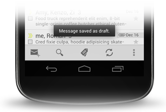

Apps móviles con Android
Seminario 2 - Analista Universitario en sistemas
5ta Semana
Created by Patricio Keilty / @patokeilty

Notificaciones
Una notificacion es un mensaje que puedes mostrar al usuario fuera de la interacción normal de la interface (UI).
por ej.
- envío exitoso de un email
- llegada de un mensaje de texto
- finalización de una descarga
- etc
Notificaciones
Vamos a ver 2 tipos distintos de notificaciones:
- Toast messages: mensajes temporales, que proveen feedback simple en pantalla por unos instantes.
- Notificaciones de usuario: son no-intrusivas, aparecen en el área de notificaciones, son persistentes y son manejadas por el servicio de sistema Notification Manager.
Toast messages
Provee feedback en un popup, apareciendo (fade-in) y desaparenciendo(fade-out) al cabo de un lapso de tiempo. La activity actual permanece visible y activa.

si se requiere intervención del usuario considere utilizar en cambio una Notificación en la barra de estado.
Toast messages con custom view
Es posible personalizar los popups utilizando un layout propio.
<LinearLayout xmlns:android="http://schemas.android.com/apk/res/android"
android:id="@+id/toast_layout_root"
android:orientation="horizontal"
android:layout_width="fill_parent"
android:layout_height="fill_parent"
android:padding="8dp"
android:background="#DAAA"
>
<ImageView android:src="@drawable/ic_launcher"
android:layout_width="wrap_content"
android:layout_height="wrap_content"
android:layout_marginRight="8dp"
/>
<TextView android:id="@+id/text"
android:layout_width="wrap_content"
android:layout_height="wrap_content"
android:textColor="#FFF"
/>
</LinearLayout>
LayoutInflater inflater = getLayoutInflater();
View layout = inflater.inflate(R.layout.toast_layout,
(ViewGroup) findViewById(R.id.toast_layout_root));
TextView text = (TextView) layout.findViewById(R.id.text);
text.setText("Un toast customizado");
Toast toast = new Toast(getApplicationContext());
toast.setGravity(Gravity.CENTER_VERTICAL, 0, 0);
toast.setDuration(Toast.LENGTH_SHORT);
toast.setView(layout);
toast.show();
Notificaciones de usuario
Una notificación es un mensaje que se muestra al usuario fuera de la interacción normal de la interface (UI).
Cuando se pide al sistema que envíe una notificación, primero aparece un ícono en al área de notificación. Para ver los detalles de la misma, el usuario debe expandir el área de notificiones o buzón de notificaciones(notification drawer).

Notificación : elementos visuales
Area de notificaciones
Para no interferir con las acciones del usuario aparece en el área de notificaciones, mostrando
- small icon
- ticker: texto rotativo
Notificación : elementos visuales
Vista normal
Se ve cuando el usuario despliega el area de notificaciones (64dp alto).

- Content title
- Large icon
- Content text
- Content info
- Small icon
- Hora en que fue enviada
Notificación : elementos visuales
Vista grande
Se ve cuando el la notificación se expande, normalmente es la primera o la que el usuario expande con un gesto.

- Content title
- Large icon
- Content text
- Content info
- Small icon
- Hora en que fue enviada
- Area de detalle
Creando una notificación
Mínimamente para crear una notificación se requiere lo siguiente:
- small icon
- content title
- content text
- action: PendingIntent para disparar alguna activity/app al tocar la notificación (opcional)
Creando una notificación
// create a pending intent
Intent notificationIntent = new Intent(getApplicationContext(),
NotificationActivity.class);
PendingIntent pendingIntent = PendingIntent.getActivity(getApplicationContext(), 0,
notificationIntent, Intent.FLAG_ACTIVITY_NEW_TASK);
// user builder to prepare notification
Notification.Builder notificationBuilder = new Notification.Builder(
getApplicationContext())
.setTicker(getResources().getString(R.string.ticker_text))
.setSmallIcon(android.R.drawable.stat_sys_warning)
.setAutoCancel(true)
.setContentTitle(getResources().getString(R.string.notification_title))
.setContentText(getResources().getString(R.string.notification_text))
.setContentIntent(pendingIntent);
// pass the Notification to the NotificationManager
NotificationManager notificationManager =
(NotificationManager) getSystemService(Context.NOTIFICATION_SERVICE);
notificationManager.notify(NOTIFICATION_ID, notificationBuilder.build());
Actualizando/borrando una notificación
NotificationManager notificationManager =
(NotificationManager) getSystemService(Context.NOTIFICATION_SERVICE);
notificationManager.cancelAll();
Guías de diseño para notificar, dar feedback y obtener respuestas
- UX Design: Confirming & Acknowledging
- UX Design: Notifications
BroadcastReceiver
Es un componente básico de una aplicación Android.
El sistema emite notificaciones de eventos (Intents) a todos los receivers registrados.
Típicamente el workflow para los broadcasts es el siguiente:
- registrarse para recibir Intents
- algún componente o app transmite el Intent (sendBroadcast(...))
- el sistema entrega el Intent a los diferentes broadcast receivers suscriptos a ese tipo de Intent
- cada receptor(receiver) reciben un llamado a método onReceive(..)
BroadcastReceiver - registrándose
- estática: en el Manifest.xml
<receiver android:name=".ReceiverTest" > <intent-filter> <action android:name="android.provider.Telephony.SMS_RECEIVED" > </action> </intent-filter> </receiver> - dinámica: por código, método registerReceiver()
mBroadcastMgr = LocalBroadcastManager .getInstance(getApplicationContext()); mBroadcastMgr.registerReceiver(receiver, intentFilter); ... mBroadcastMgr.unregisterReceiver(receiver);
BroadcastReceiver - implementación
Proveer una clase que extienda BroadcastReceiver, y redefina onReceive(..)
public class ReceiverTest extends BroadcastReceiver {
@Override
public void onReceive(Context context, Intent intent) {
Log.d("RECEIVER", "Intent recibido");
...
}
}